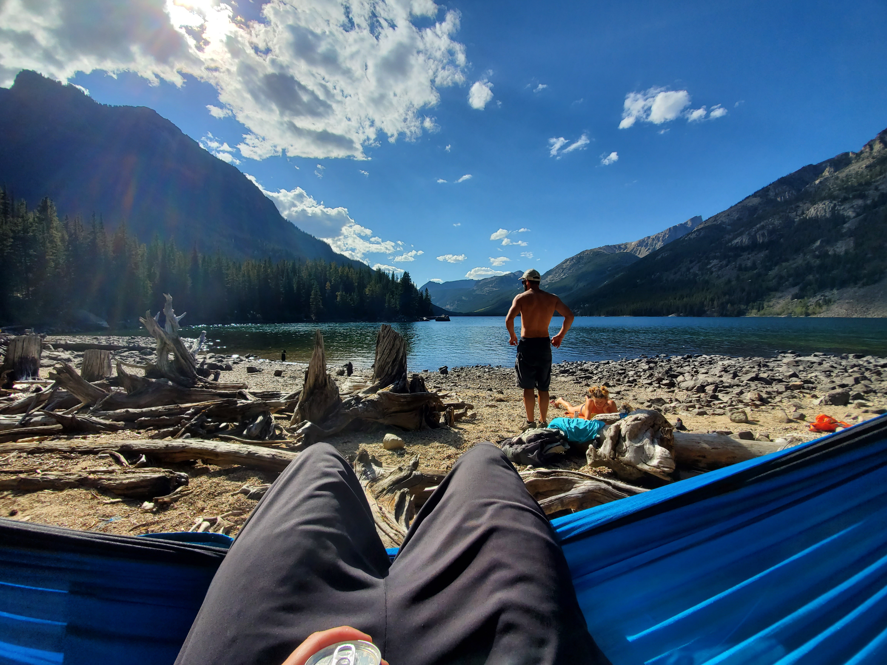

Welcome to The Montana Visitor Website

Montana has some of the most spectacular scenery in world. The vast wilderness and mountainess landscape provides an outdoor lovers playground. Skiing, hiking, mountain biking, fishing are just a few of the amazing recreations Montana has to offer. Whether you enjoy you enjoy the winter or summer there is always a great time to be had.
Summer is an absolutley stunning time to visit Montana
With an abundance of lakes, waterfalls, peaks and valleys, you can always find an amazing place to relax. If relaxing is not for you, you can fulfill your adreniline needs by exploring on a mountain bike or whitewater raft. Even using the restroom can be breathtaking!

Winter is great time for skiiers to escape from the crowds

Big Sky Resort is by far the most well known resort in Montana. With nearly 5,000 acres of skiable terrain and averaging 400 inches of snow a year this is a great option for you winter vacation. However, Montana is also home to many smaller unknown resorts that provide great option for those seeking something a little different. There is also plenty of oppurtunity for backcountry skiing for those more adventrous.
Montana is not just about the outdoors!
There are many small towns and cities throughout Montana exemplify charm and provide respite from all the action. Craft Breweries and restaurants provide a great place to wind down and refuel for the next day. The Museam of The Rockies, located in Bozeman, is a rainy day alternative everyone can enjoy.